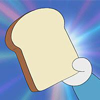

ขนมปังช่วยจำ
ความสามารถ :
เป็นขนมปังที่สามารถ บันทึกข้อมูล ได้ เพียงแค่ กดหนังสือหรือกระดาษลงไปบนขนมปัง แล้วกินเข้าไป จะทำให้ จำเนื้อหานั้นได้ทันที
ข้อมูลเพิ่มเติม :
ตอนที่ปรากฏครั้งแรกมังงะ ตอน "ขนมปังช่วยจำ" ในปี 1973
ข้อจำกัด: ความจำจะอยู่ได้ชั่วคราวเท่านั้น
อาจเกิดปัญหาการจำข้อมูลผิดถ้าขนมปังโดนเปียกหรือเสียหาย